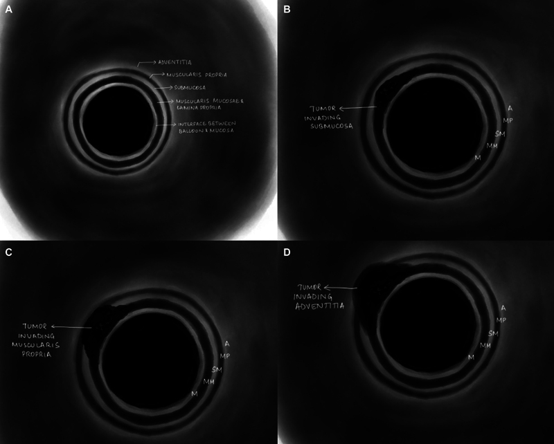

食道癌疾病介紹
什麼是食道癌 (Esophageal Cancer)？
食道 (esophagus) 是連接咽喉與胃的管狀器官，長約 25 公分，負責將食物從口腔輸送到胃部。當食道內壁的細胞發生不正常的增生與變異，就可能形成惡性腫瘤 (malignant tumor)，也就是食道癌。
食道癌是全球常見的消化道癌症之一，在台灣則長期位居男性癌症死因的前十名。由於食道癌早期症狀不明顯，許多患者在確診時已經是中晚期，因此了解疾病的基本知識、危險因子及早期警訊非常重要。
食道癌的類型
食道癌主要分為兩大類型：
1. 鱗狀細胞癌 (Squamous Cell Carcinoma, SCC)
- 起源於食道內壁的鱗狀上皮細胞 (squamous epithelial cells)
- 通常發生在食道的上段或中段
- 在亞洲地區（包括台灣）是最常見的食道癌類型
- 與抽菸、飲酒、食用過熱飲食密切相關
2. 腺癌 (Adenocarcinoma, EAC)
- 起源於食道下段的腺體細胞 (glandular cells)
- 通常發生在食道的下段，靠近胃的交界處
- 在歐美國家較為常見，且發生率持續上升
- 與胃食道逆流 (gastroesophageal reflux disease, GERD) 及巴雷特食道 (Barrett’s esophagus) 密切相關
| 好發位置 |
食道上段、中段 |
食道下段 |
| 主要區域 |
亞洲、非洲 |
歐美國家 |
| 主要危險因子 |
菸酒、過熱飲食 |
胃食道逆流、肥胖 |
| 前驅病變 |
食道黏膜異常增生 |
巴雷特食道 |
危險因子 (Risk Factors)
以下因素可能增加罹患食道癌的風險：
生活習慣相關
- 吸菸 (smoking)：吸菸者罹患食道癌的風險比不吸菸者高出數倍
- 飲酒 (alcohol consumption)：尤其大量飲用烈酒，若同時吸菸則風險更高
- 食用過熱飲食 (hot beverages/food)：長期飲用超過 65°C 的熱飲已被世界衛生組織列為可能致癌因子
- 嚼食檳榔：在台灣為重要的危險因子，特別是與菸酒併用
疾病相關
- 胃食道逆流 (GERD)：胃酸長期逆流刺激食道下段黏膜
- 巴雷特食道 (Barrett’s esophagus)：食道下段黏膜因長期胃酸刺激而產生變化，為腺癌的前驅病變 (precancerous condition)
- 食道弛緩不能症 (achalasia)：食道下端肌肉無法正常放鬆
其他因素
- 年齡：好發於 50 歲以上
- 性別：男性發生率明顯高於女性（約 3-4 倍）
- 肥胖 (obesity)：特別增加腺癌風險
- 營養缺乏：長期缺乏蔬果攝取
常見症狀 (Symptoms)
食道癌的症狀往往在疾病進展到一定程度後才會出現，常見症狀包括：
主要症狀
- 吞嚥困難 (dysphagia)：這是最常見的症狀。一開始可能只是吞嚥固體食物時感覺卡卡的，隨著腫瘤變大，連喝水都可能困難
- 體重減輕 (weight loss)：因為吃不下導致體重在短時間內明顯下降（例如數週內減少 5 公斤以上）
- 胸口疼痛或不適 (chest pain)：吞嚥時感覺胸骨後方疼痛或有灼熱感
其他可能症狀
- 聲音沙啞 (hoarseness)
- 持續性咳嗽 (chronic cough)
- 消化不良或胃灼熱 (heartburn)
- 食物逆流
- 嘔血或解黑便
- 疲倦無力
重要提醒： 以上症狀也可能由其他疾病引起。但若您有持續兩週以上的吞嚥困難或不明原因的體重減輕，請儘速就醫檢查。
如何診斷食道癌？
醫師會透過以下檢查來確認是否為食道癌：

圖：內視鏡超音波 (EUS) 用於食道癌分期的示意圖，顯示 T1-T3 各期腫瘤侵犯深度。圖片來源：Talasila P, et al. Indian Journal of Medical and Paediatric Oncology. 2024. CC-BY. 原文：PMC11651834
主要診斷工具
- 上消化道內視鏡 (upper GI endoscopy / esophagogastroduodenoscopy, EGD)
- 最重要的診斷工具
- 醫師將一條細軟的管子（內視鏡）經口放入食道，直接觀察食道內壁
- 可同時做切片 (biopsy) 取得組織送病理化驗
- 國際指引建議至少取 6 個以上的組織切片
- 電腦斷層掃描 (computed tomography, CT)
- 了解腫瘤的大小、位置及是否侵犯周圍組織
- 評估是否有淋巴結 (lymph node) 或遠端器官轉移 (metastasis)
- 正子攝影 (positron emission tomography, PET/CT)
- 利用癌細胞代謝活躍的特性，偵測全身是否有癌細胞擴散
- 內視鏡超音波 (endoscopic ultrasound, EUS)
- 評估腫瘤侵犯食道壁的深度
- 檢查食道周圍淋巴結是否有異常
食道癌的分期 (Staging)
分期是用來描述癌症嚴重程度的方式，醫師會依據腫瘤侵犯的深度、淋巴結轉移的數目、以及是否有遠端轉移來判定期別。簡單來說：
| 第零期 (Stage 0) |
癌細胞只在食道最表面 |
內視鏡治療即可 |
| 第一期 (Stage I) |
腫瘤侷限在食道壁淺層 |
手術為主，早期可用內視鏡切除 (endoscopic resection, ER) |
| 第二期 (Stage II) |
腫瘤侵犯較深或少數淋巴結轉移 |
手術搭配化療/放療 |
| 第三期 (Stage III) |
腫瘤侵犯更深或多個淋巴結轉移 |
術前化放療 (neoadjuvant chemoradiation) + 手術 |
| 第四期 (Stage IV) |
癌症已轉移至遠端器官 |
以全身性治療為主（化療、免疫治療） |
分期檢查流程
flowchart TD
A[疑似食道癌症狀] --> B[上消化道內視鏡 + 切片]
B --> C{病理確認為食道癌?}
C -->|否| D[追蹤或其他診斷]
C -->|是| E[進一步分期檢查]
E --> F[電腦斷層 CT]
E --> G[正子攝影 PET/CT]
E --> H[內視鏡超音波 EUS]
F --> I[多專科團隊 MDT 討論]
G --> I
H --> I
I --> J[決定治療計畫]
J --> K{期別判定}
K -->|早期 Stage 0-I| L[內視鏡切除或手術]
K -->|中期 Stage II-III| M[術前化放療 + 微創手術]
K -->|晚期 Stage IV| N[全身性治療]
多專科團隊的重要性 (Multidisciplinary Team, MDT)
食道癌的治療需要多個科別的醫師共同合作，包括：
- 胸腔外科 / 消化外科醫師：負責手術
- 腫瘤內科醫師：負責化學治療 (chemotherapy) 與免疫治療 (immunotherapy)
- 放射腫瘤科醫師：負責放射治療 (radiation therapy)
- 肝膽腸胃科醫師：負責內視鏡檢查與早期治療
- 病理科醫師：判讀組織檢體
- 營養師：提供營養支持計畫
- 個案管理師：協調各項治療與檢查
根據國際指引（NCCN 2025、ESMO 2022），多專科團隊討論 (MDT conference) 是食道癌治療的標準流程，能確保每位患者獲得最適合的個人化治療方案。
治療選項概覽
食道癌的治療會依據期別、腫瘤類型、患者健康狀態等因素來決定，主要治療方式包括：
- 內視鏡切除 (Endoscopic Resection, ER)：適用於極早期的食道癌
- 手術切除 (Esophagectomy)：食道癌治療的核心，目前以微創手術 (minimally invasive esophagectomy, MIE) 為趨勢
- 化學治療 (Chemotherapy)：使用藥物殺滅癌細胞
- 放射治療 (Radiation Therapy)：利用高能量射線消滅癌細胞
- 免疫治療 (Immunotherapy)：幫助免疫系統辨識並攻擊癌細胞
- 標靶治療 (Targeted Therapy)：針對癌細胞特定分子進行攻擊
在接下來的章節中，我們將詳細介紹微創手術的方式、術前準備及術後照護。
📋 請填入貴院資料：
- 本院負責科別：_______________
- 聯絡電話 / 分機：_______________
- 門診時間：_______________
- 主治醫師：_______________
- 本院手術特色 / 年手術量：_______________
延伸閱讀
↑